Palworld parece aberto, mas a progressão tem uma espinha dorsal clara: missão principal, captura em lotes, nível da base e torres. Ignore uma dessas frentes e o gargalo chega. Normalmente quando você está carregando minério a pé. Um clássico.
Configuração recomendada
Comece um mundo novo em dificuldade Normal. A própria Pocketpair recomenda um personagem novo para a versão 1.0. Mantenha os multiplicadores padrão na primeira campanha. Se o seu tempo de jogo for curto, reduza apenas a incubação de ovos. O guia não depende de qualquer ajuste.
Capture cinco de cada espécie fácilO bônus de captura da versão 1.0 fecha com cinco cópias. Troque de espécie assim que completar o lote.
Ative viagem rápida e watchtowersViagem rápida rende pontos de tecnologia. Watchtowers revelam mapa e também viram pontos de deslocamento.
Suba o nível da base cedoAs missões do Palbox liberam mais trabalhadores e até quatro bases. Faça o mínimo necessário e siga.
Enfrente torres na ordem da históriaAlém de ser a rota natural, a comunidade reportou bloqueios de missão ao quebrar a ordem logo após o lançamento 1.0.
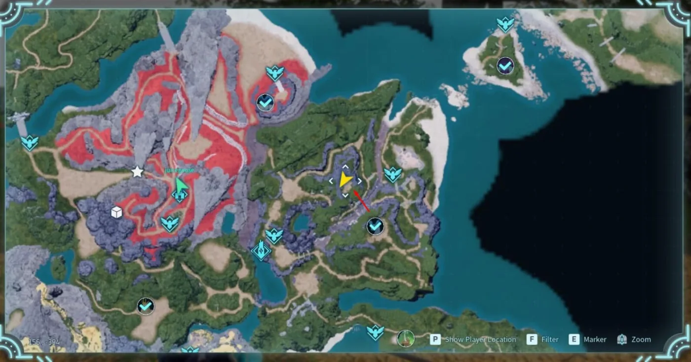
Primeiro posto de minério: 156, -394Use o local como transição, não como casamento. Quando o Garimpo de Metais entrar no nível 25, a função vale mais que o minério natural.
01. Ajuste o controle
Se a sua versão exibir interação com toque único, ative. No PS5, confirme o nome da opção antes de alterar. O objetivo é evitar segurar o botão em toda bancada.
02. Vasculhe o spawn
Pegue o baú, as anotações e os recursos soltos antes de descer. Madeira, Pedra, Frutinhas e Paldium encurtam o primeiro ciclo de fabricação.
03. Feche quatro lotes de cinco
Lamball, Cattiva, Chikipi e Teafant ou Pupperai colocam o personagem perto do nível 7 sem farm repetitivo.
04. Trate dungeon como caixa de ferramentas
Baús finais, Manuais de Tecnologia Antiga, elixires, Lotus e Pals Alfa justificam o desvio. Marque entradas que ainda estiverem acima do seu nível.
05. Libere pesca no nível 15
Use pontos de pesca para encontrar Pals aquáticos e buscar passivas menos comuns. É alternativa de captura, não obrigação da campanha.
02 / ATRIBUTOS
Uma baseline concreta. Com margem para corrigir.
Esta distribuição usa os 79 pontos obtidos até o nível 80 como referência editorial para solo e PvE. Cada ponto rende aproximadamente +50 de Peso, +10 de Vigor ou +100 de Vida. Velocidade de Trabalho fica em zero porque uma base competente fabrica por você.
8 / 6 / 5Nível 20Peso / Vigor / Vida. Ataque e Velocidade de Trabalho em zero.14 / 10 / 10 / 5Nível 40Peso / Stamina / Vida / Ataque.20 / 14 / 15 / 10Nível 60Conforto resolvido. O dano começa a receber investimento real.25 / 18 / 20 / 16Nível 80Fecha 79 pontos. Velocidade de Trabalho continua em zero.
Momento
Próximo ponto
Por quê
Exceção
1 a 20
Peso, Stamina, Vida
Minério, captura e exploração cobram autonomia antes de dano.
Se joga sempre em grupo, retire 2 a 4 pontos de Peso.
21 a 40
Peso até 14, depois Vida
Ore, carvão, munição e equipamento tornam o inventário pesado.
Se morrer com escudo cheio, o problema é armadura ou execução.
41 a 60
Vida e Ataque
Montaria e automação já substituíram parte do conforto inicial.
Adicione Stamina se ainda falha em esquiva ou escalada.
61 a 80
Ataque, depois ajuste fino
Chefes finais pedem dano sustentado e menos tempo exposto.
Build de arma pode mover até 6 pontos de Peso para Ataque.
Redefinição: a Poção para Apagar Memória entra no nível 43 pela Produção de Remédios Elétrica. Use quando a logística já estiver automatizada e você quiser converter conforto antigo em Vida ou Ataque.
03 / ROTA PRINCIPAL
Nove marcos. Uma campanha inteira.
Use o nível da torre como ponto de controle, não como convite automático. A condição de avanço combina equipamento, base, captura e mobilidade. Se o teste de prontidão falhar, corrija o gargalo antes de atravessar o mapa.
01
Níveis 1 a 10 · Fundamentos
Zoe e Grizzbolt
110, -431Elétrico · use Terra
Seu objetivo não é correr até a torre. É chegar lá com uma base que trabalha enquanto você explora e uma equipe capaz de capturar sem matar.
Siga a missão principal até criar Bancada Primitiva, Esfera de Pal e Palbox. Pegue madeira, pedra e Paldium no caminho.
Capture em lotes de cinco: Lamball, Cattiva, Chikipi, Lifmunk, Foxparks e Pengullet. Não fique preso completando espécie rara.
Converse com NPCs pelo caminho. Missões secundárias curtas rendem experiência e itens de progressão que custariam coleta ou fabricação.
Monte a base mínima: baú perto da bancada, camas, Ração, Plantação de Frutinhas, Águas Termais, Madeireira e Pedreira.
Feche a cadeia de trabalho: Plantio, Rega, Coleta, Acender fogo, Garimpo, Trabalho manual e Transporte. Trabalho sem transporte vira chão decorado com recurso.
Equipe Arco Velho ou Arco de Três Tiros, escudo, armadura e um Pal de Terra. Pupperai é uma boa resposta atual para a primeira torre.
Derrote Zoe no nível 10. Mire no treinador quando houver janela, mantenha o Pal ativo e use cobertura nas rajadas de Grizzbolt.
02
Níveis 11 a 20 · Mobilidade
Lily e Lyleen
184, 27Grama · use Fogo
A campanha abre quando você deixa de caminhar. Esta fase resolve viagem, minério e o primeiro salto industrial.
Crie Metal Pickaxe e Metal Axe no nível 11. Pare de gastar tempo extra em cada nó.
Capture um Direhowl ou Eikthyrdeer para solo. No nível 15, libere Nitewing Saddle e transforme voo na prioridade da fase.
Ative fast travel em arco pelo centro e Bamboo Groves. Colete Pal Effigies, baús e entradas de dungeon sem grandes desvios.
Carregue um item de retorno à base. Ele encerra expedições longas sem obrigar uma travessia de volta quando o inventário ou os recursos de combate estiverem no limite.
Garanta minério repetível. Use o cluster atrás da Desolate Church como solução inicial ou crie um posto temporário em um agrupamento plano.
Libere Plantação de Trigo, Moinho e Quadro de Avisos. Prepare a cadeia de Bolo antes da Fazenda de Acasalamento no nível 20.
Leve Fogo para Lily. Foxparks cumpre o papel no começo. Entre com proteção de frio, munição e comida suficientes para cinco minutos.
03
Níveis 21 a 40 · Indústria
Axel e Orserk
-584, -514Elétrico + Dracônico · Terra + Gelo
Esta é a maior transição da campanha. Você sai de bancada manual e entra em criação, expedição, linhas de produção e minério automático.
Construa a Fazenda de Acasalamento no nível 20. Mantenha Ovo, Leite, Mel, Trigo e Frutinhas em produção. Bolo passa a ser infraestrutura.
Busque Anubis cedo por acasalamento quando tiver os pais disponíveis. Trabalho manual e Garimpo tornam a base muito mais rápida.
Monte Pal Expedition Station no nível 22. Use Pals ociosos para trazer materiais enquanto você explora.
Avance as pesquisas da base. Elas melhoram produção, expedições e liberam estruturas que aumentam a eficiência dos postos de trabalho.
No nível 25, construa o Garimpo de Metais. A partir daqui, a base de minério externa deixa de ser obrigatória.
Avance Palbox e energia. Fábrica de Linha de Esferas, Fábrica de Linha, Gerador Elétrico, Forno Melhorado e bons trabalhadores são a prioridade real.
Entre no Monte Obsidiana preparado. Leve armadura resistente a calor, munição, Terra para Orserk e Gelo contra Dracônico.
04
Níveis 41 a 45 · Calor e precisão
Marcus e Faleris
558, 338Fogo · use Água
Aqui dano sustentado começa a importar mais que truques de abertura. O alvo é chegar ao deserto com proteção, arma confiável e Água forte.
Troque para Fuzil Semiautomático ou esquema melhor. Produza munição em lote e mantenha reserva separada.
Construa Garimpo de Metais II no nível 40. Se a base ainda depende de viagem manual para minério, corrija agora.
Explore Dessicated Desert em circuitos. Ative fast travel, marque Alpha Pals, dungeons, coal e pontos de interesse.
Capture ou prepare um Pal de Água forte. Azurobe funciona, Jormuntide é a meta natural quando estiver pronto para o Alfa.
Leve cura, escudo e resistência a calor. Faleris cria pressão constante. Use pilares, dash e janelas depois dos ataques.
05
Níveis 46 a 50 · Frio e petróleo
Victor e Shadowbeak
-150, 440Escuridão · use Dracônico
Nível 50 é a virada do petróleo. Antes disso, consolide quartzo, frio extremo e uma composição Dracônica capaz de lidar com Shadowbeak.
Faça uma rota pelas Montanhas Astrais. Leve armadura resistente ao frio, marque Quartzo Puro, baús, masmorras e Pals Alfa.
Capture Pals Dracônicos úteis e suba-os perto do seu nível. Quivern e Jormuntide Ignis servem.
No nível 50, libere Extrator de Petróleo, Plastiaço, Computador e Gerador Elétrico Grande. Reserve sua terceira base para petróleo se necessário.
Use geradores e especialistas em eletricidade. O extrator consome energia pesada. Um trabalhador mediano vira gargalo invisível.
Contra Victor, priorize sobrevivência. Shadowbeak pune exposição. Ataque após esquiva, alterne Pals feridos e evite ficar sem escudo.
06
Níveis 51 a 55 · Sakurajima
Saya e Selyne
-597, 203Escuridão · use Dracônico
Agora o objetivo é equipamento de Plastiaço, Esferas Supremas e exploração disciplinada de Sakurajima. Não confunda acesso com prontidão.
Priorize Esfera Suprema, Armadura de Plastiaço e Fuzil Laser no nível 51. Esquemas bons passam na frente da receita básica.
Construa Garimpo de Quartzo Puro no nível 53. No 52, use o Extrator de Petróleo de Alta Pressão para tirar a produção da dependência de nó natural.
Explore Sakurajima por borda. Ative fast travel, settlement, watchtower e dungeons antes de atravessar o centro.
Melhore comida e SAN. Trabalhadores avançados só valem algo se não passarem metade do turno doentes.
Leve um Dracônico forte para Selyne. A luta exige leitura de área e rotação de Pal.
07
Níveis 56 a 60 · Feybreak
Bjorn e Bastigor
-1294, -1669Gelo · use Fogo
Feybreak é o exame final da velha Palpagos e o portal para Sunreach. Entre com uma base madura, não com a esperança de achar tudo no caminho.
Prepare Armadura de Plastiaço Resistente a Frio, esferas de alto nível, kits de reparo, comida e munição em excesso.
Leve Fogo de alto desempenho. Jormuntide Ignis continua excelente. Ajuste as habilidades ativas para aproveitar a fraqueza de Bastigor.
Libere viagem rápida e o assentamento primeiro. Depois faça Pals Alfa, masmorras e materiais de Feybreak.
Inicie especialização dos trabalhadores. Trabalho manual, Garimpo, Acender fogo e Gerar eletricidade dedicados superam Pals generalistas nesta fase.
Derrote Bjorn e Bastigor. O portal no topo da Feybreak Tower libera a passagem para Sunreach.
08
Níveis 61 a 70 · Sunreach
Auri e Shaolong
-419, 1431Dragão + Água · Gelo + Elétrico
Sunreach introduz recursos próprios e a cadeia que abre a Árvore do Mundo. Aqui exploração e história voltam a andar juntas.
Entre pelo portal da Torre de Feybreak. Ative viagem rápida em Sunreach e trate voo como requisito.
Desative os seis terminais. Eles removem a barreira da Tower of the Azure Covenant.
Comece a cadeia de Soralite. O Forno da Civilização Antiga no nível 66 e a Bancada da Civilização Antiga no 67 marcam a nova indústria.
Monte uma resposta dupla. Gelo responde a Dragão e Elétrico responde a Água. Não dependa de um único Pal que cubra mal os dois.
Após a torre, fale com Auri. Siga a missão de Panthalus, colete os quatro grandes restos e fabrique Echoing Flute.
Capture Panthalus nível 70. Mire no cristal da cabeça na primeira fase, evite ondas e não finalize sem uma esfera. Ele precisa estar no grupo para abrir a Árvore do Mundo.
09
Níveis 71 a 80 · World Tree
Zenara e Astralym
Sealed SanctumSem elemento · sem fraqueza
O fim não oferece counter elementar gratuito. O que vence é uma conta simples: equipamento final, dano consistente, rotação limpa e Pals realmente treinados.
Explore a Árvore do Mundo em circuitos curtos. Traga Paloxita, Gemas Radiantes, Água Sagrada da Árvore do Mundo e materiais raros sem arriscar todo o inventário.
Use Gemas Radiantes em Despertar apenas nos Pals que ficarão na sua equipe final. Não espalhe recurso raro por nostalgia de caixa.
Trabalhe mutações e habilidades passivas depois que a base sustentar Bolo e incubação em volume. Primeiro uma equipe forte, depois o laboratório de perfeição.
No nível 80, libere Beam Launcher e Wing Pack. Schematics superiores continuam tendo prioridade quando disponíveis.
Feche a equipe final: dano principal, segundo dano com conjunto diferente, suporte, mobilidade e espaço flexível. Todos perto do limite e com habilidades ativas coerentes.
Entre no Sealed Sanctum preparado para cinco minutos. Sem fraqueza elemental, o seu resultado depende de uptime, weak points, sobrevivência e troca correta de Pal.
Spoiler de preparação final
Faça uma tentativa de leitura antes de gastar seus melhores consumíveis. Identifique padrões de área, janelas de dano e momentos em que um Pal fica exposto. Na tentativa séria, leve o inventário limpo, munição exclusiva da arma principal e cura em acesso rápido.
04 / ARSENAL E ESQUEMAS
Suba de categoria. Não cultue raridade.
Uma arma lendária antiga pode perder para a versão básica da categoria seguinte. Use esquemas para prolongar armas boas, não para transformar equipamento vencido em projeto de fim de semana.
01 a 10
Arco Velho ou Arco de Três Tiros
Barato, munição simples e dano suficiente para captura e Zoe. Troque quando o tempo para abater um alvo começar a consumir mais flechas que paciência.
11 a 25
Besta ou arma encontrada em Ruína Antiga
Um esquema roxo antecipado pode carregar esta faixa. A Ruína Antiga em 49, -330 é um desvio opcional registrado em vídeo.
26 a 40
Pistola e Fuzil de Tiro Único
Priorize cadência, munição sustentável e dano por abertura. Uma Pistola melhor pode ser obtida na região de -700, -686.
41 a 54
Fuzil Semiautomático, Assalto e Laser
Esta é a faixa em que munição e produção importam mais que a cor do esquema. Farm de cavernas, airdrops e bosses só entra se sustentar a próxima torre.
55 a 67
Plasma, Gatling Laser e plataformas de petróleo
Use oil rigs, Coliseu, cavernas de Feybreak e chefes para saltos reais. Não passe horas buscando uma melhoria pequena quando Sunreach já oferece outra categoria.
68 a 80
Armas antigas, Beam Launcher e torres no difícil
Depois da campanha, as torres no difícil e o conteúdo final viram fontes de esquemas. Antes disso, a prioridade é terminar a rota com equipamento consistente.
05 / ECONOMIA E RECURSOS
Automatize na ordem em que o jogo cobra.
O vídeo de recursos foi transformado nesta linha de produção. A regra é simples: nunca inaugure um consumidor novo sem reserva, energia e trabalhador para alimentá-lo.
Faixa
Produção obrigatória
Alvo editorial de reserva
Decisão correta
1 a 10
2 ou 3 Pedreiras, Madeireira, Plantação de Frutinhas e Triturador
1.000 Pedra, 500 Madeira, 200 Paldium
Dois trabalhadores por máquina pesada. O Triturador converte Pedra em Paldium e encerra a coleta manual.
11 a 24
Forno Primitivo, minério natural, Trigo, Moinho e cadeia de Bolo
300 Lingotes, 20 Bolos ou ingredientes equivalentes
Marque grupos de minério, mas trate qualquer posto mineral como temporário.
25 a 36
Garimpo de Metais, Fábrica de Linha, energia e Acasalamento
500 Lingotes e produção contínua de Esferas
Garimpo de Metais no nível 25 elimina a obrigação de morar sobre minério.
37 a 49
Solvente Corrosivo, carvão, enxofre, Lingotes Refinados e Circuitos Elétricos
200 Lingotes Refinados, 100 Circuitos Elétricos, munição para duas torres
Minério e carvão continuam relevantes até o fim.
50 a 52
Óleo cru, Gerador Elétrico Grande, Plastiaço e Computador
100 Plastiaços e energia com sobra
No 50, use nó natural. No 52, o Extrator de Petróleo de Alta Pressão libera a escolha do terreno.
53 a 60
Garimpo de Quartzo Puro, Cortador a Plasma Múltiplo e forja avançada
Quartzo e Plastiaço para armadura, arma e captura
Garimpo de Quartzo Puro é nível 53. Antes disso, faça uma rota curta nas Montanhas Astrais.
61 a 70
Recursos de Sunreach, Ancient Furnace e Ancient Workbench
Materiais para dois sets e um time definitivo
Não gaste materiais novos em toda receita brilhante. Primeiro infraestrutura, depois arma.
71 a 80
Paloxite, Radiant Gems, Ancient Farm e síntese final
Uma tentativa completa do chefe sem refarm
Awakening e Mutation só recebem recursos quando os cinco slots finais estiverem definidos.
Buffers que evitam colapso
Comida: mantenha 2 ciclos completos de produção no Feed Box.
Material: guarde 2 lotes da próxima receita antes de trocar de fase.
Energia: o gerador deve operar com sobra, não no limite do extrator.
Transporte: baú ao lado da saída reduz mais atraso que outro trabalhador aleatório.
Fazenda de Criação por fase
Vixy cedo: Esferas, flechas e ouro.
Chikipi, Mozzarina e Beegarde: Ovo, Leite e Mel. Permanecem úteis por causa de Bolo.
Kelpsea e Dumud: Fluidos de Pal e Óleo de Pal Requintado.
Sibelyx, Sootseer e Surfent: Tecido de Alta Qualidade, Osso e Couro.
Breeding 1.0 sem laboratório prematuro
NÍVEL 20
Bolo padrão
Inicia a cadeia com Farinha, Frutinhas Vermelhas, Leite, Ovo e Mel. Use primeiro para trabalhadores que removem gargalos.
Meta: Anubis, Rega, Garimpo e produção.NÍVEL 47
Bolo de Verduras
Produz dois ovos por ciclo. É o melhor salto de volume quando Tomate e Alface já fazem parte da agricultura.
Meta: condensação e seleção de passivas em volume.NÍVEL 60
Bolo de Verduras Extravagante
Aumenta a qualidade de atributos e possui 3% de chance de gerar Ovo Mutado. Mutação é bônus raro, não cronograma.
Meta: candidatos para o time definitivo.NÍVEL 74
Bolo Especial
Aumenta a chance de herdar várias passivas dos pais. Até seis passivas podem ser transferidas no sistema da versão 1.0.
Meta: fechar a linhagem final sem depender apenas de sorte.
O que mudou de verdade
O Condenser agora exige 48 Pals no total: 4, 8, 12 e 24.
Ovos Mutados podem trazer atributos maiores e uma passiva exclusiva.
Habitats e combinações foram redistribuídos, reduzindo atalhos antigos de breeding.
Use uma calculadora atualizada com os Pals que você já possui.
Velocidade sem superstição
Babysitter aumenta produção de ovos e incubação em 30% para Pals atribuídos à Fazenda de Acasalamento.
Não conte com múltiplas Babysitter acumulando até confirmação direta.
Pesquisas que geram comida extra reduzem o custo real de cada lote de Bolo.
A automação de recursos da versão 1.0 reduziu o valor de morar sobre minério. O que manda agora é área plana, circulação de Pals grandes, energia e distância curta entre produção e armazenamento.
ProduçãoBancadas, linhas, baús
ForjaFurnaces, energia
ComidaPlantations, cozinha
Bem-estarCamas, SAN, clínica
Base 1: HQ industrial
Produção, forja, cozinha, armazenamento e trabalhadores de Trabalho manual. É a base que você visita.
Base 2: alimento e acasalamento
Plantações, Fazenda de Criação, Bolo e incubação. Separe da indústria para reduzir tráfego.
Base 3: energia e materiais
Quarries, forjas e petróleo. Antes do nível 52, aceite nó natural. Depois, escolha pela eficiência.
Base 4: projeto atual
Acasalamento em volume, posto regional, incursão ou conteúdo final. Não deixe uma base inteira existir sem função.
MeçaUse fundações temporárias para testar o diâmetro útil.CentralizePalbox no centro geométrico, com a frente voltada para a área de acesso.Marque 8Conte oito fundações em cada direção para aproximar o círculo.Abra eixosCrie corredores radiais e quatro quadrantes funcionais.Suba 2 níveisAltura mínima para Pals grandes e máquinas sem colisão.Teste antesSolte os maiores trabalhadores antes de decorar ou fechar paredes.
6, -527
Primeira HQ segura
Plano, perto de Small Settlement e fácil de defender. Melhor escolha para aprender a operação.
54, -424
HQ ampla à beira d'água
Boa área de construção e visual limpo. Poucos recursos naturais, o que deixa de importar após a automação.
188, -37
Montanha de uso misto
Posição central e defensável. Boa transição antes de todos os quarries estarem disponíveis.
-76, -321
Minério temporário
Muitos nós de minério. Use antes do nível 25 e converta a função quando Garimpo de Metais entrar.
-81, -193
Petróleo inicial
Local conhecido por múltiplos pontos de petróleo. Preserve espaço de extrator e fundações.
-11, -946
Projeto de Feybreak
Área plana para posto avançado ou base final. Chegue preparado para clima e ameaças locais.
Detalhe que economiza horas: posicione o Palbox sobre uma fundação e os baús no lado de saída de cada máquina. A fundação facilita reformas futuras; os baús reduzem caminhada. Uma base bonita que prende Anubis continua sendo uma base ruim. Só ficou mais cara.
Armazenamento sem faxina
Use a ação de guardar automaticamente para enviar materiais aos baús compatíveis da base.
Marque os itens que devem permanecer no inventário antes de usar o depósito em massa.
Use o armazenamento rápido quando quiser abastecer apenas um baú específico.
Restrinja categorias por baú para impedir que comida, minério e peças acabem misturados.
Saúde e produtividade
Mantenha o Armário de Remédios abastecido para os Pals tratarem doenças sem intervenção constante.
Adicione a Clínica quando disponível e preserve camas e Águas Termais compatíveis com o tamanho da equipe.
Salada é a primeira meta prática de comida para produtividade e SAN; Pizza assume depois pela nutrição e controle de fome.
Evite trabalho pesado contínuo enquanto a estrutura de recuperação ainda for fraca.
07 / MAPA DE CAMPO
Coordenada sem contexto é só um número perdido.
Use o mapa como visão macro e os pontos abaixo como desvios de alto retorno. Sunreach e World Tree têm mapas próprios depois de liberados, portanto não aparecem na mesma escala do continente.
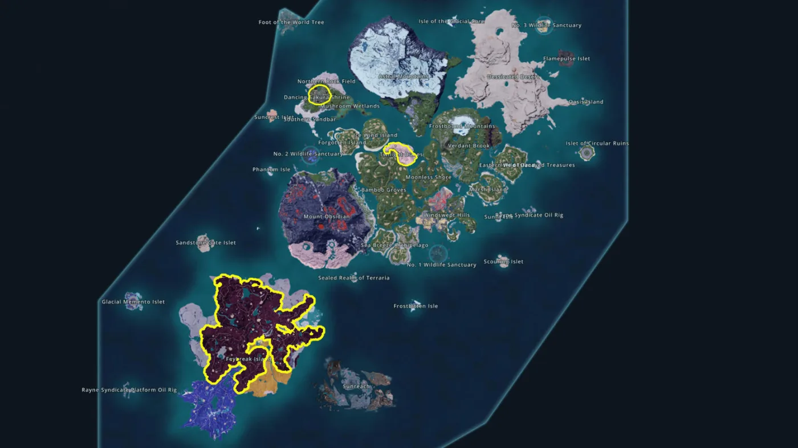
Palpagos 1.0 em visão macroImagem de referência do mapa do jogo. Use o mapa interno e as coordenadas para aproximação final. Sunreach é acessada pelo portal sobre a torre de Feybreak.
Posto inicial de minérioBase temporária até o Garimpo de Metais.
156, -394
Ruína com arma inicialDesvio para esquema melhor no começo.
49, -330
Esquema de PistolaSalto de categoria antes do meio do jogo.
-700, -686
Roupa térmicaProteção prática para calor e frio.
606, 304
Growth Acceleration BellAumenta a experiência dos Pals do grupo.
-24, -94
Pal Tamer's GlassesIV e Clemência para captura controlada.
111, 18
Amuleto de reconhecimentoVida e resistência climática.
-818, -550
Portal para SunreachDerrote Bjorn e Bastigor em Feybreak.
-1294, -1669
Precisão: os três primeiros pontos e os quatro acessórios vêm de demonstrações em vídeo da versão 1.0. A torre de Feybreak foi cruzada com guia pós-lançamento. Se um patch mover loot fixo, o mapa do jogo vence este documento.
08 / TECNOLOGIA
Compre tempo. Depois compre poder.
Pontos são mais apertados no momento em que você menos entende o que vale. Esta lista cobre os marcos que alteram a progressão. Cosméticos, defesa pesada e Pal Gear sem uso ficam para depois.
Nível
Prioridade
O que muda
Decisão
02 a 10
Palbox, Esferas, Fazenda de Criação, produção básica, Estátua da Força, Águas Termais, Forno
A base começa a funcionar sem você.
Obrigatório
11 a 15
Ferramentas de metal, Bancada de Alta Qualidade, Megaesfera, Casulo de Condensação de Pal, Trigo, Moinho, Sela de Nitewing
Mobilidade, minério rápido e Bolo entram na rota.
Obrigatório
20 a 25
Fazenda de Acasalamento, Gigaesfera, Bancada de Armas, Mosquete, Estação de Expedição, Garimpo de Metais
Começa a indústria e o acasalamento estratégico.
Obrigatório
27 a 40
Fábricas de Linha, energia, fornos melhores, Linha de Esferas II, Garimpo de Metais II
Volume substitui trabalho manual.
Alta
41
Baú de Guilda e Fuzil Semiautomático
Logística entre bases e dano sustentado melhor.
Alta
50 a 52
Extrator de Petróleo, Gerador Elétrico Grande e Extrator de Petróleo de Alta Pressão
Abre petróleo e depois remove a dependência do nó.
Obrigatório
51 a 54
Esfera Suprema, Armadura de Plastiaço, Fuzil Laser, Garimpo de Quartzo Puro, Cortador a Plasma Múltiplo
Captura, equipamento e quartzo automático. Garimpo no nível 53.
Alta
66 a 67
Forno da Civilização Antiga, Lingote de Soralite, Sol Sphere, Bancada da Civilização Antiga
Abre a indústria de Sunreach.
Obrigatório
78 a 80
Ancient Material Synthesizer, Ancient Farm, Beam Launcher, Wing Pack
Fecha a progressão de World Tree.
Final
09 / PALS E COMBATE
Escolha a função. Depois escolha o Pal.
Raridade não substitui trabalho, habilidade de parceiro ou status. Abaixo está a ordem real de captura, melhoria e montagem do grupo.
Trabalho
Começo
Meio
Meta de fim
Nota operacional
Trabalho manual
Lifmunk, Ribunny, Lunaris
Anubis
Splatterina ou especialista com nível 6+
Sekhmet aumenta a velocidade de trabalho de Anubis. Bancadas finais também cobram Manipulação.
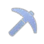
Garimpo
Cattiva, Rushoar, Tombat
Digtoise, Anubis
Especialista com Garimpo alto
Tombat trabalha à noite. Priorize a aptidão antes de uma passiva bonita.
Rega
Pengullet, Penking
Azurobe, Jormuntide
Neptilius
Triturador, Moinho e plantações competem pelo mesmo trabalhador.
Acender fogo
Foxparks, Arsox
Ragnahawk, Blazamut
Especialista de forja
Separe cozinha e metal quando ambos virarem consumidores constantes.
Gerar eletricidade
Sparkit, Univolt
Grizzbolt
Orserk
Petróleo exige geração estável e um Pal que não abandone o posto.
Plantio e Coleta
Gumoss, Bristla
Petallia, Verdash
Lyleen e Pals de apoio
Ração cheia vale mais que outro forno parado por fome.
Resfriamento
Pengullet, Chillet
Foxcicle
Bastigor ou especialista noturno
Refrigeração precisa de cobertura contínua, não pico de velocidade.
FunçãoDefina o processo que precisa acelerar.SuitabilityO nível base de trabalho vem antes de porcentagens.TurnoPal de Escuridão ou com Noturno evita produção parada à noite.PassivasArtisan +50%, Remarkable Craftsmanship +75%, Demon's Hand +90% com custo de SAN.Almas e estrelasInvista apenas em trabalhador que seguirá na base final.ElixiresOs aumentos do personagem são permanentes. Use respeitando o limite de cada atributo.Livros e implantesGuarde melhorias de aptidão para trabalhadores definitivos. Recursos raros não salvam candidato ruim.
Apoios de base
Braloha acelera a produção de ovos na Fazenda de Acasalamento.
Shroomer Noct reduz a perda de SAN dos trabalhadores.
Clovee adiciona +1 de Coleta aos outros Pals da base.
Eikthyrdeer Terra adiciona +1 de Extração de Madeira.
Efeitos iguais não acumulam. Um slot bem escolhido basta.
Captura por fase
1 a 15: Vixy, Pupperai, Nitewing, Tombat e Arsox.
16 a 30: Penking, Azurobe, Lunaris, Digtoise, Beegarde e Mozzarina.
31 a 50: Anubis, Jormuntide, Orserk, Lyleen e Shroomer Noct.
51 a 65: Bastigor, Splatterina, Neptilius, Sekhmet e Braloha.
66 a 80: capture por função do time final, não por coleção.
Acessórios por missão
Explorador
Conforto que reduz retorno à base e abre terreno difícil sem sacrificar todos os slots.
Wandering Merchant CharmCarga e resistência climática para expedições longas.
Air WalkerPulos e dashes aéreos para ruínas, Sunreach e arenas verticais.
Roupa térmicaFecha calor e frio quando a armadura principal precisa priorizar defesa.
Capturador
Informação, Clemência e mobilidade. Dano bruto demais costuma converter captura rara em loot comum.
Pal Tamer's GlassesMostra IV e adiciona Clemência para preservar o alvo com 1 de Vida.
Phantom RingAumenta a janela de invencibilidade das esquivas.
Growth Acceleration BellUse depois da captura para acelerar o novo Pal sem trocar a rota inteira.
Caçador de chefes
Monte o kit depois de escolher o dano principal. Elemento errado bem equipado continua sendo elemento errado.
Dogen EmblemAtaque geral para jogador e Pal quando a luta não pede especialização extrema.
Bastão elementalAumenta ataque do Pal e o dano do elemento usado pela rotação.
Cinto ou talismã defensivoVida e Defesa quando sobreviver aumenta mais o dano total que outro bônus ofensivo.
Composição de combate que funciona
SLOT 01
Aplicador
Abre com Burn, Soak, Freeze, Ivy-Covered, Poison, Muddy, Electrified ou Blind.
SLOT 02
Carry
Explora a fraqueza, o status aplicado e as janelas de weak point.
SLOT 03
Amplificador
Buff elemental, dano do jogador, redução de defesa ou melhoria da habilidade de parceiro.
SLOT 04
Defesa
Cura, barreira, resistência, controle ou segundo Pal para absorver rotação perigosa.
SLOT 05
Mobilidade
Montaria ou counter específico. Troque este slot quando a arena não exigir deslocamento.
Status
Uso
Rotação
Queimadura
Dano contínuo e pressão em alvos de Gelo ou Grama.
Aplique, troque para o atacante de Fogo e use a Habilidade de Parceiro na janela.
Encharcado + Congelamento
Controle e janela segura contra alvos agressivos.
Água aplica Encharcado, Gelo força Congelamento e o jogador ataca o ponto fraco.
Coberto de hera + Veneno
Controle de movimento e dano persistente.
Grama abre. Veneno mantém pressão enquanto as habilidades recarregam.
Eletrificado
Interrupção e oportunidade de dano contra Água.
Aplique antes da habilidade de maior recarga do atacante Elétrico.
Lamacento ou Cegueira
Reduz a pressão recebida e melhora sobrevivência.
Use no início da fase perigosa, não quando o chefe já está inofensivo.
Rotação: aplique status, entre com o carry, ative o suporte, recue antes do golpe letal e coloque o segundo Pal enquanto as skills voltam. Cinco atacantes soltos não são um time. São fila de atendimento.
10 / ATLAS OPERACIONAL
O que buscar e por quê.
A Palpedia completa foi destilada em decisões de rota. O Atlas mostra os Pals, recursos e sistemas que mudam o ritmo do save.
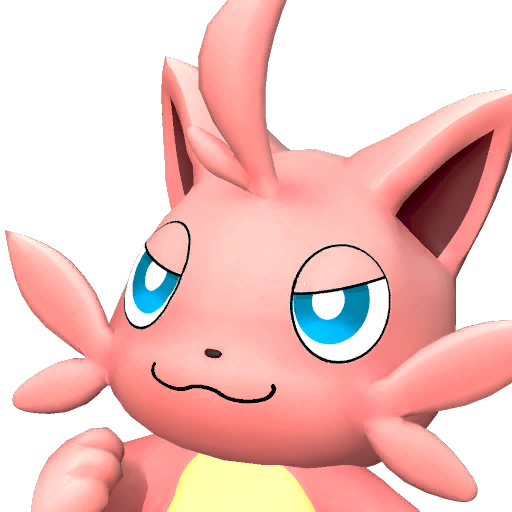
Cattiva
Trabalhador geral no primeiro dia e bônus de carga no grupo. Mantém valor até a logística ficar confortável.
InícioCargaBase
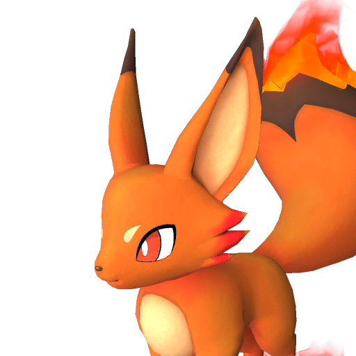
Foxparks
Acender fogo, calor e dano de Fogo cedo. O Arreio transforma o Pal em arma útil no começo.
InícioFogo
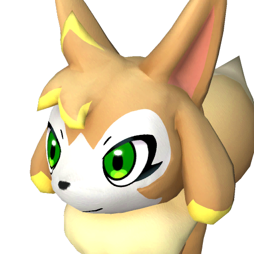
Vixy
Fazenda de Criação inicial para Esferas, flechas e ouro. Perde prioridade quando captura e dinheiro já estão automatizados.
FazendaInício
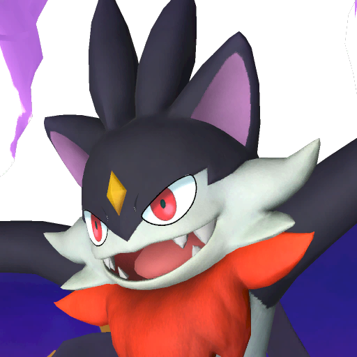
Tombat
Garimpeiro noturno acessível. Mantém o posto ativo enquanto trabalhadores comuns dormem.
GarimpoNoturno
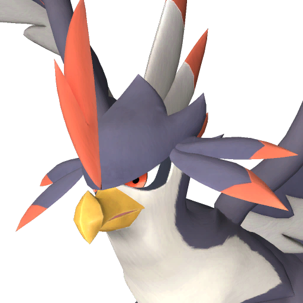
Nitewing
Primeiro voo simples, com Sela no nível 15. Substitua pela montaria aérea mais rápida que aparecer depois.
MobilidadeNível 15
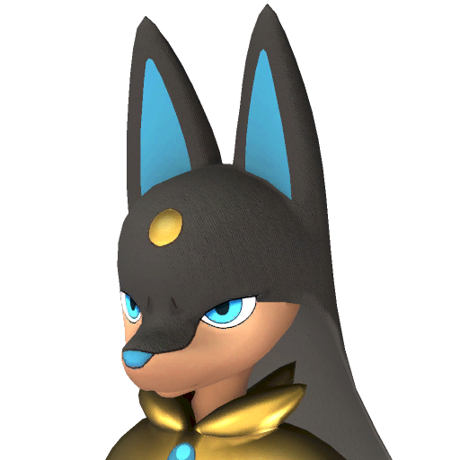
Anubis
Alvo de acasalamento no meio do jogo. Trabalho manual e Garimpo altos aceleram construção e produção.
MeioTrabalho manual
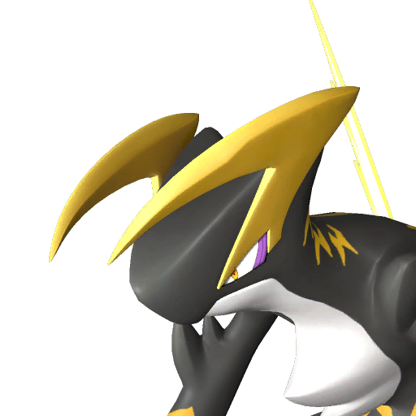
Orserk
Meta natural para geração de eletricidade avançada. Faz diferença quando petróleo e linhas pesadas entram.
FimEletricidade
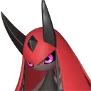
Splatterina
Trabalho manual 6 com atividade noturna. Candidata forte para produção avançada sem turno morto.
FimTrabalho manual
Neptilius
Rega 7 para Triturador, Moinho, plantações e processos finais que disputam o mesmo especialista.
FimRega
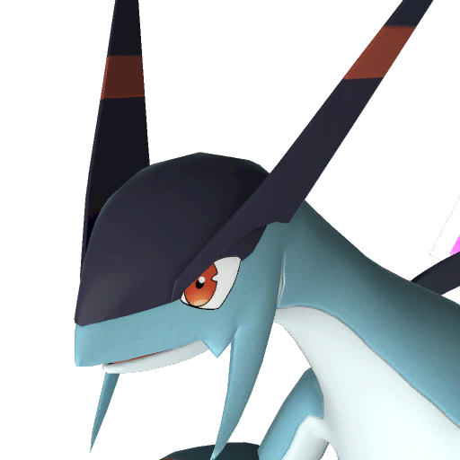
Jetragon
Montaria aérea final e excelente investimento de mobilidade. Não atrase a campanha tentando capturá-lo cedo demais.
FimVoo
Minério e Lingotes
Gargalo central até o Garimpo de Metais no nível 25. Marque grupos cedo e automatize assim que possível.
Nível 1 a 25Indústria
Quartzo Puro
Explore as Montanhas Astrais com proteção a frio. Garimpo de Quartzo Puro no nível 53 remove a rota manual.
Nível 53Circuitos
Óleo cru
Começa no nível 50 em nós naturais. O extrator de alta pressão no 52 permite escolher a base por logística.
Nível 50 a 52Plastiaço
Soralite e Paloxite
Soralite alimenta a indústria de Sunreach. Paloxite e Radiant Gems pertencem ao World Tree e ao equipamento final.
Nível 66+Ancient
Acasalamento e Mutação
Acasalamento começa no 20. Mutação é projeto de fim de jogo, com bolos especiais e baixa chance.
BoloPassivas
Awakening
Radiant Gems do World Tree fortalecem Pals favoritos. Use no time definitivo, não em candidatos temporários.
World TreeFinal
Lucky Pals e promoção
Lucky Pals podem chegar já promovidos. Frutas de promoção reduzem a necessidade de capturar ou criar dezenas de cópias de um Pal raro.
EstrelasCondensação
Dog Coins
No Medal Merchant, compre primeiro as caixas que liberam slots de acessórios. Cosméticos esperam; espaço permanente de build não.
AcessóriosPrioridade
Totens e equipamentos
Os desafios dos totens liberam equipamentos especiais. Priorize os óculos que mostram IV e aplicam Clemência, úteis para avaliar e capturar sem finalizar o alvo.
IVCaptura
Zoe e Grizzbolt especiais
Além da luta da torre, uma missão secundária de Zoe libera uma versão especial da dupla. Trate como objetivo de coleção e utilidade, não como requisito da campanha.
MissãoOpcional
Implantes e relíquias
Recompensas e Coliseu fornecem implantes permanentes. No fim do jogo, a restauração de relíquias converte materiais do World Tree em melhorias consumíveis e outros itens raros.
PassivasEndgame
Zonas de Caça Proibida
As ilhas guardam materiais exclusivos usados por equipamentos especiais. Entre com mobilidade, espaço de inventário e uma lista do componente necessário.
MateriaisExploração
11 / CHECKLIST
Seu save, em fatos.
Marque somente o que está feito. O progresso fica salvo neste navegador. A porcentagem não mede habilidade, mede o quanto da infraestrutura crítica já deixou de depender da sua memória.
Fundação
Indústria
Endgame inicial
World Tree
12 / FUNDAMENTAÇÃO
Os vídeos viraram conteúdo. Aqui ficam apenas as fontes.
Marcos de tecnologia foram conferidos em base atualizada. Os vídeos alimentaram as rotas de recursos, coordenadas, esquemas, trabalhadores, Fazenda de Criação, captura e combate. Imagens promocionais vêm do kit oficial. Ícones individuais são assets da interface do jogo, mapeados pelas tabelas internas e obtidos por espelhos públicos identificados.
O cap agora é 80. O bônus de captura caiu de doze para cinco capturas. Work Suitability foi expandido para dez níveis. Há nove torres, Sunreach, World Tree, Awakening, Mutation, novas áreas, habitats reorganizados e uma história principal refeita. Se um guia ainda manda capturar doze de cada espécie ou termina no nível 65, ele não está descrevendo este jogo.
Por que não há uma lista de todos os Pals?
Porque quantidade não substitui decisão. Este guia prioriza os Pals que resolvem trabalho, mobilidade e counters de fase. Para localização individual e breeding exato, use uma base de dados atualizada para a sua versão.
Posso jogar em coop?
Sim. A rota continua válida, mas recursos, número de trabalhadores e preparação de chefe precisam ser ajustados ao tamanho do grupo. Este documento foi calibrado para solo e PvE.